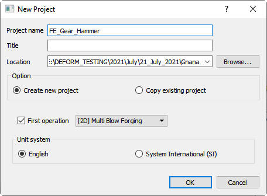
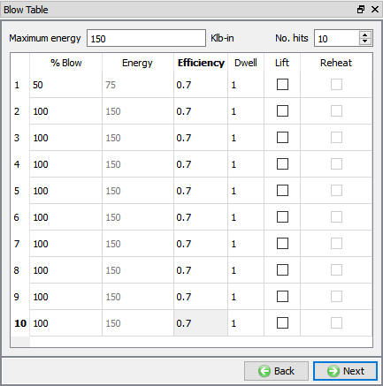
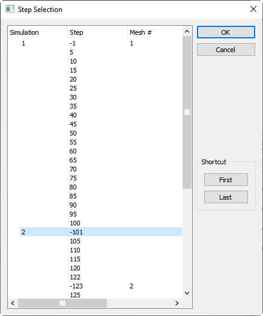
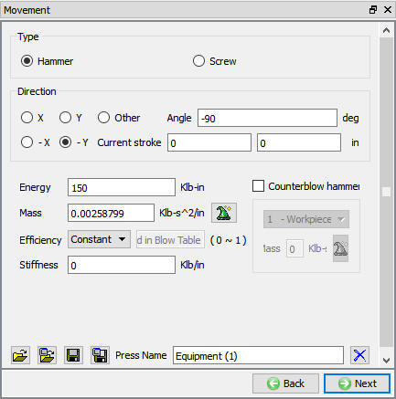
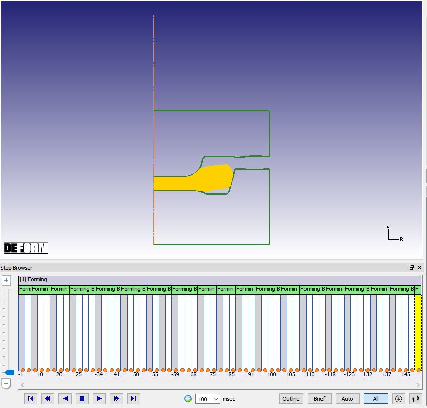

Create a new project called FE_Gear_Hammer. Check First operation check box and set it to [2D] Multi Blow Forging. The Unit system should be English.

New Problem Window
On the Process page, set the Energy to 150 Klb-in. This is the maximum hammer energy. Click  to Blow Table.
to Blow Table.
For the Hit 1, set % Blow to 50 and the Efficiency to 0.7.
Note: The “No. Hits” field updates the table immediately. It is easy to accidently overwrite previously defined hits if you try typing in the number manually. For this reason, it is recommended to use the up/down arrows to adjust number of hits for this operation.
Increase the No. Hits to 2 using the up arrow. Set the % Blow energy to 100 for hit 2, then click the up arrow to increase the No. Hits to 10. This blow table contains a light first blow then nine full energy blows (see Fig. L8.2.).
Click  to Geometry Type.
to Geometry Type.

Blow Table window
At this point, we will import a previously set-up model from a different project. Go to File  Import and open FE_Gear_LargerBillet.DB. Select the first (negative) step of Operation 2. It should be around step 101, Click No for Global/Local Time popup asking "Do you want to
use new time definition?" for Global time. This option initialize the global time from the DB to zero. Click
Import and open FE_Gear_LargerBillet.DB. Select the first (negative) step of Operation 2. It should be around step 101, Click No for Global/Local Time popup asking "Do you want to
use new time definition?" for Global time. This option initialize the global time from the DB to zero. Click  until Top die movement page.
until Top die movement page.

Step selection window
The movement in the dialog should be defined as Hammer with an Energy of 150 Klb-in.
Click the Mass calculator  icon. Enter a mass of 1000 pounds. The system will convert the mass to DEFORM consistent units. Click
icon. Enter a mass of 1000 pounds. The system will convert the mass to DEFORM consistent units. Click  until Generate DB page.
until Generate DB page.

Hammer movement window
Go to Generate DB page and generate the database. Click on the MO  Mode button (above the operation tree) to start the simulation.
Mode button (above the operation tree) to start the simulation.
Click on the  action label to open the Run Options dialog. Use the default Continue Run option
to select “Continue from the last step” option and then select the Simulation mode as Interactive radio button. Click on
action label to open the Run Options dialog. Use the default Continue Run option
to select “Continue from the last step” option and then select the Simulation mode as Interactive radio button. Click on  button to run
the simulation.
button to run
the simulation.
When the simulation is completed, click the MO  Mode button to review results.
Mode button to review results.
Play the steps and note that the dies do not fill and the simulation stops after all the blows are completed. (See Fig. L8.5.)

Last of last blow operation step